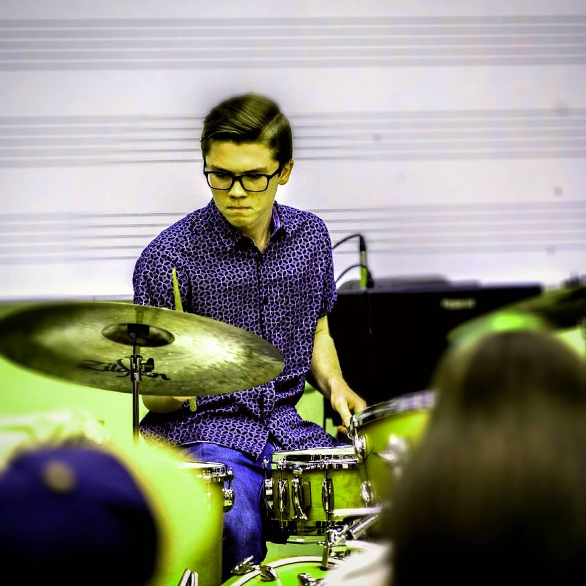

Josh Platt Drummer, Educator, Composer/Arranger
 "Playing fast around the drums is one thing. But to play music, to play with people for others to listen to, that's something else. That's a whole other world". - Tony Williams